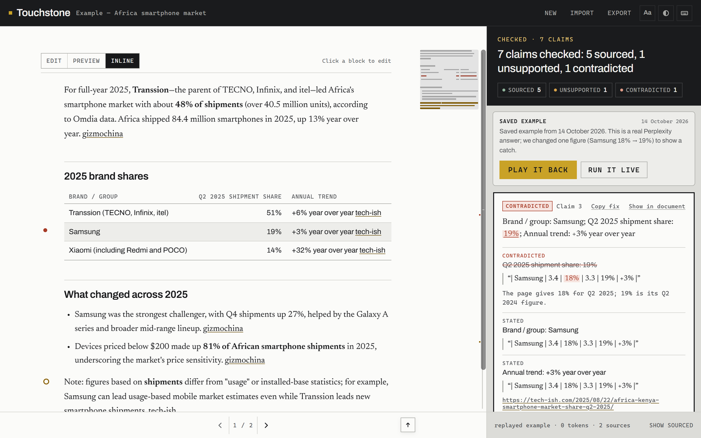
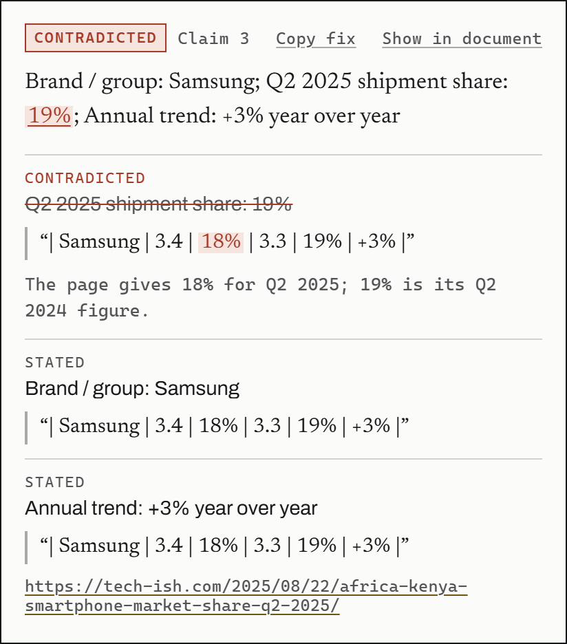
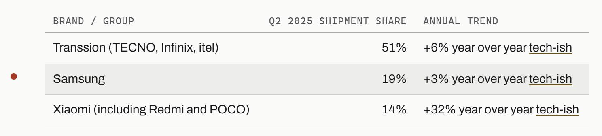
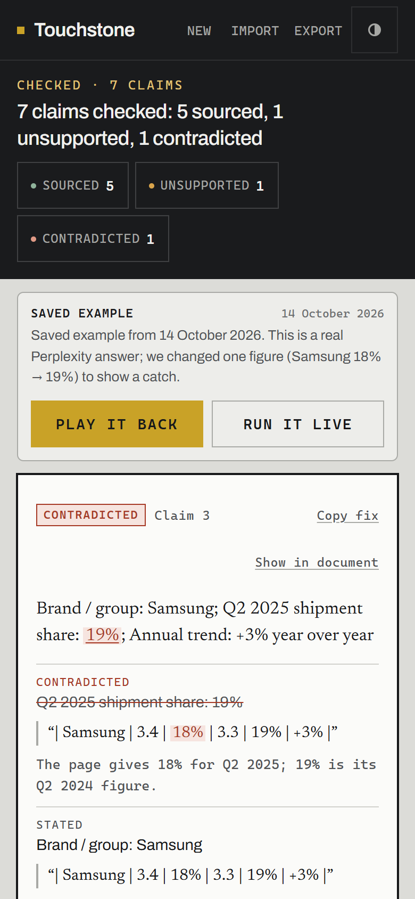

Does the source say it?
Paste an AI research report with its links. Touchstone opens every page it cites and checks each claim against the line the source actually wrote — not against whether the claim sounds right.
No sign-in. Up to 25 claims and 8 sources per check, 5 checks an hour. The example below is a saved run: zero tokens.

A citation is a promise.
We checked three assistants’.
On 14 October 2026 we put the same question — internet access and the digital economy in Algeria — to Gemini, Perplexity and ChatGPT, then opened the pages they cited.
- Gemini
- 18 citations. Of the 13 we could check, at most 2 were backed by the cited page: a 2024 edition cited for 2026 figures, UNCTAD figures credited to the World Bank, bare homepages.
- Perplexity
- Cited a page for figures that page doesn’t contain.
- ChatGPT
- Mostly accurate — but the text you copy out has site icons where its inline links were, so the sources have to be put back before anything can be checked.
Our own small test, not a study: one question, one day.
Claim in, evidence out.
Every claim is checked on its own, against the page it cites.

The page is opened
Each link the claim cites is fetched — HTML or PDF, public addresses only. A page that blocks the checker is reported as unreachable, never judged.
The quote is verified
The model proposes the line that backs the claim; code then proves it. The quote must exist on the page exactly, or near-exactly with identical numbers. Numbers, units, currencies, periods, years and names are checked against that same line.
The label follows
Code assigns the verdict. Red needs the model’s judgement and a conflicting figure verified on the page; when only a code check doubts a fact, the result is amber, never red.

Four verdicts, said plainly.
- Sourced
- Every fact in the claim is on the page.
- Partial
- Some facts are on the page; others aren’t found.
- Unsupported
- No line on the page backs it.
- Contradicted
- The source says otherwise.
Other outcomes
Not every check ends in a verdict. These say why one couldn’t be given.
- Couldn’t confirm a code check doubts the support
- No source given the text cites nothing
- Unverified no checkable passage on the page
- Opinion advice, not a fact
- Source unreachable the page couldn’t be read
- Not checked over the limits, or out of time
- Error the check itself failed
An early prototype, honestly.
- Cited claims per check
- 25
- Distinct source links
- 8
- Checks per hour
- 5
- Report length
- 20,000 characters
Don’t paste anything private. Reports are processed by Google Gemini’s free tier, which may use inputs to improve Google’s products.
It checks the page, not the truth. Whether the source is right is still your call.
Not public, not commercial. Expect rough edges; your edits save on your device.
Bring a report.
The example is already loaded: play it back without spending a token. Agents can call the same checker at touchstone.aynx.dev/mcp.
